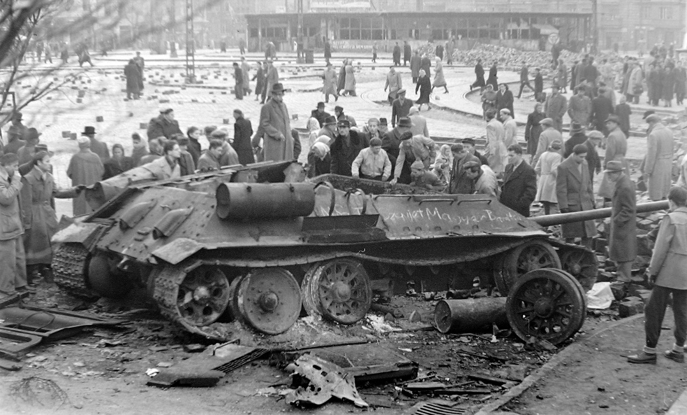
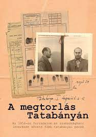
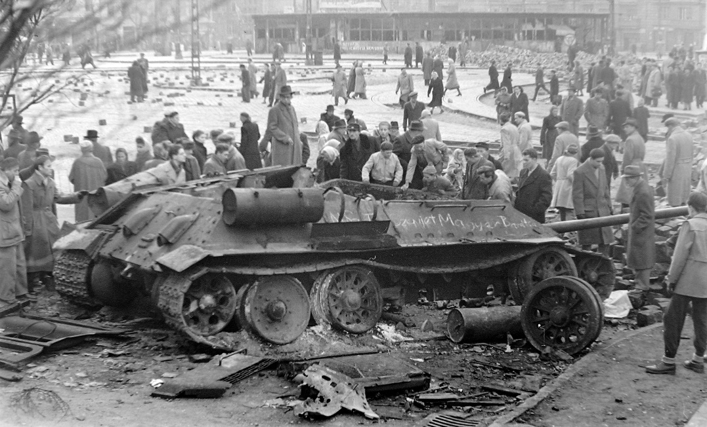
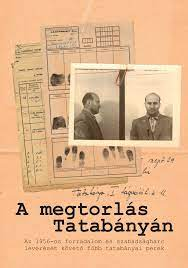

Bevezetés
A második világháború után, mint a Kelet-Európai országok zöme, úgy Magyarország is Szovjet bábállamként végezte. Az emberek megelégelték a Sztálinista diktatúra és tucatnyi ember jogtalan, koholt vádakra alapozott kivégzése („A rendszer ellensége”) által nyújtott terrort.
 



aaaaaa